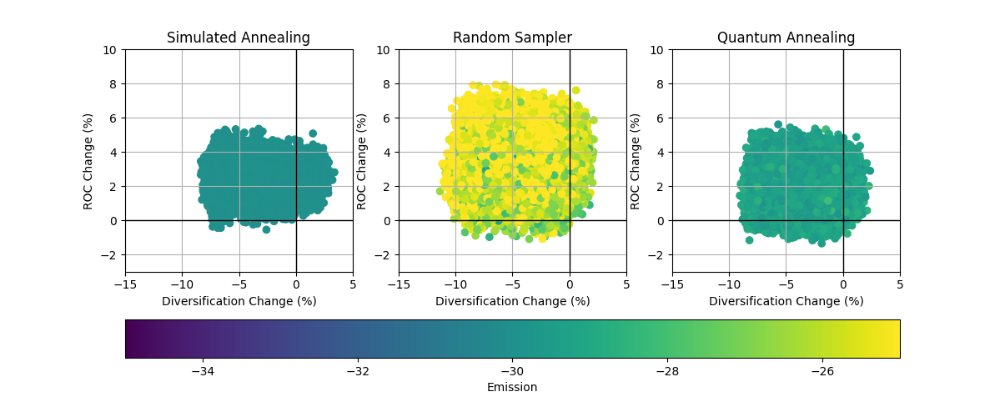
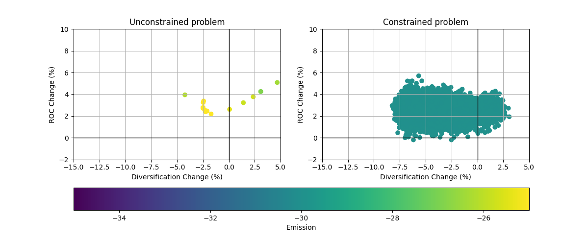

Portfolio optimization
This page contains advanced examples for the tno.quantum.problems.portfolio_optimization package.
Examples of basic usage can be found in the module documentation.
The package provides code that converts the multi-objective portfolio optimization problem
into a QUBO problem. The transformed problem
can then be solved using quantum annealing techniques.
Requirements
Install the following dependencies to run the examples below:
pip install tno.quantum.problems.portfolio_optimization~=2.0
pip install matplotlib
Examples
Example 1: Demonstrates how to use different QUBO solvers for the portfolio optimization problem.
{kind=link}
1"""Demonstrate usage of different QUBO solvers for portfolio optimization."""
2
3import matplotlib.pyplot as plt
4import numpy as np
5
6from tno.quantum.optimization.qubo import SolverConfig
7from tno.quantum.problems.portfolio_optimization import (
8 PortfolioOptimizer,
9 plot_points,
10)
11
12# Set up penalty coefficients for the constraints
13lambdas1 = np.logspace(-16, 1, 25, endpoint=False, base=10.0)
14lambdas2 = np.logspace(-16, 1, 25, endpoint=False, base=10.0)
15lambdas3 = np.array([1])
16
17# Create portfolio optimization problem
18portfolio_optimizer = PortfolioOptimizer("benchmark_dataset")
19portfolio_optimizer.add_minimize_hhi(weights=lambdas1)
20portfolio_optimizer.add_maximize_roc(formulation=1, weights_roc=lambdas2)
21portfolio_optimizer.add_emission_constraint(
22 weights=lambdas3,
23 emission_now="emis_intens_now",
24 emission_future="emis_intens_future",
25 name="emission",
26)
27
28# Define different solver configurations
29solver_configurations: dict[str, SolverConfig] = {
30 "Simulated Annealing": SolverConfig(
31 name="simulated_annealing_solver",
32 options={"num_reads": 100, "num_sweeps": 200},
33 ),
34 "Random Sampler": SolverConfig(
35 name="random_sampler_solver",
36 options={"num_reads": 100},
37 ),
38 "Quantum Annealing": SolverConfig(
39 name="d_wave_clique_sampler_solver",
40 options={"num_reads": 100, "annealing_time": 100},
41 ),
42}
43
44# Compute the portfolio optimization experiments
45experiment_data = []
46for solver_config in solver_configurations.values():
47 results = portfolio_optimizer.run(solver_config, verbose=False)
48 results_df = results.results_df
49 x, y, z = (
50 results_df["diff diversification"],
51 results_df["diff ROC"],
52 results_df["diff emission"],
53 )
54 experiment_data.append((x, y, z))
55
56# Plot the experiment data
57fig, axs = plt.subplots(ncols=3, figsize=(12, 5))
58(ax1, ax2, ax3) = axs
59for i, ((x, y, z), solver_label) in enumerate(
60 zip(experiment_data, solver_configurations)
61):
62 ax = axs[i]
63 scatter_plot = plot_points(x, y, c=z, cmap="viridis", ax=ax, vmin=-35, vmax=-25)
64 ax.set_title(solver_label)
65 ax.set_xlim(-15, 5)
66 ax.set_ylim(-3, 10)
67cbar = fig.colorbar(scatter_plot, ax=axs, orientation="horizontal", label="Emission")
68plt.show()
69
Additionally we can make a boxplot of emission values.
# Create boxplot of emission values
data = [z for (_, _, z) in experiment_data]
labels = solver_configurations.keys()
plt.boxplot(data, tick_labels=labels)
plt.ylabel("Emission Values")
plt.title("Emission Box plot")
plt.tight_layout()
plt.show()
{kind=link}
Example 2: Demonstrates how to use emission constraint in portfolio optimization.
{kind=link}
1"""Demonstrate usage of emission constraints."""
2
3import matplotlib.pyplot as plt
4import numpy as np
5
6from tno.quantum.optimization.qubo import SolverConfig
7from tno.quantum.problems.portfolio_optimization import (
8 PortfolioOptimizer,
9 plot_points,
10)
11
12# Define solver configurations
13solver_config = SolverConfig(
14 name="simulated_annealing_solver",
15 options={"num_reads": 20, "num_sweeps": 200},
16)
17
18# Set up penalty coefficients for the constraints
19lambdas1 = np.logspace(-16, 1, 25, endpoint=False, base=10.0)
20lambdas2 = np.logspace(-16, 1, 25, endpoint=False, base=10.0)
21lambdas3 = np.array([1])
22
23# Define basic portfolio optimization problem instance
24portfolio_optimizer = PortfolioOptimizer(portfolio_data="benchmark_dataset", k=2)
25portfolio_optimizer.add_minimize_hhi(weights=lambdas1)
26portfolio_optimizer.add_maximize_roc(formulation=1, weights_roc=lambdas2)
27
28# Solve problem without emission constraint
29results_no_constraint = portfolio_optimizer.run(solver_config)
30results_no_constraint_df = results_no_constraint.results_df
31
32# Compute difference in emission
33portfolio_data = results_no_constraint.portfolio_data
34outstanding_now = portfolio_data.get_outstanding_now()
35total_outstanding_now = np.sum(outstanding_now)
36
37emission_intensity_now = portfolio_data.get_column("emis_intens_now")
38emission_intensity_future = portfolio_data.get_column("emis_intens_future")
39
40
41def calculate_diff_emission(outstanding_future):
42 """Calculate manually "diff emission" values"""
43 total_outstanding_future = np.sum(outstanding_future)
44 total_relative_emission_now = (
45 np.sum(outstanding_now * emission_intensity_now) / total_outstanding_now
46 )
47 total_relative_emission_future = (
48 np.sum(outstanding_future * emission_intensity_future)
49 / total_outstanding_future
50 )
51 return 100 * (total_relative_emission_future / total_relative_emission_now - 1)
52
53
54results_no_constraint_df["diff emission"] = results_no_constraint_df[
55 "outstanding amount"
56].apply(calculate_diff_emission)
57
58x1, y1, z1 = (
59 results_no_constraint_df["diff diversification"],
60 results_no_constraint_df["diff ROC"],
61 results_no_constraint_df["diff emission"],
62)
63
64# Solve problem with emission constraint
65portfolio_optimizer.add_emission_constraint(
66 weights=lambdas3,
67 emission_now="emis_intens_now",
68 emission_future="emis_intens_future",
69 name="emission",
70)
71results_constraint = portfolio_optimizer.run(solver_config)
72results_constraint_df = results_constraint.results_df
73
74x2, y2, z2 = (
75 results_constraint_df["diff diversification"],
76 results_constraint_df["diff ROC"],
77 results_constraint_df["diff emission"],
78)
79
80# Plot the experiment data
81fig, axs = plt.subplots(ncols=2, figsize=(12, 5))
82(ax1, ax2) = axs
83
84scatter_plot1 = plot_points(x1, y1, c=z1, cmap="viridis", ax=ax1, vmin=-35, vmax=-25)
85scatter_plot2 = plot_points(x2, y2, c=z2, cmap="viridis", ax=ax2, vmin=-35, vmax=-25)
86cbar = fig.colorbar(scatter_plot1, ax=axs, orientation="horizontal", label="Emission")
87ax1.set_title("Unconstrained problem")
88ax2.set_title("Constrained problem")
89
90for ax in axs:
91 ax.set_xlim(-15, 5)
92 ax.set_ylim(-2, 10)
93
94plt.show()